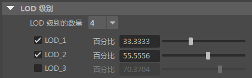

此工作流示例概述了如何在 Maya 中创建 LOD 网格和设置 LOD 组，然后将它们传递到游戏引擎中。在本工作流中，我们会自动生成较低分辨率版本的网格，但您也可以使用已减少一组网格。在这种情况下，可以跳过此处的前几个步骤，改为参见创建 LOD 组。
- 加载并选择高分辨率网格。
对于该示例，我们将其称为 Sven_Mesh。
- 选择“编辑 > LOD (详细级别) > 生成 LOD 网格”(Edit > LOD (Level of Detail) > Generate LOD Meshes) >
 。
。
- 在“生成 LOD 网格选项”(Generate LOD Meshes Options)中，设置以下选项，以确定如何减少高分辨率网格以生成低分辨率网格：
- 指定是否要将选定网格中的蒙皮权重复制到新网格。启用或禁用“复制蒙皮权重”(Copy skin weights)复选框。
- 将“减少方法”(Reduction Method)设置为按百分比、顶点或三角形计数减少多边形数量。（在本示例中，我们使用“百分比”(Percentage)。）
- 指定要创建的“LOD 级别的数量”(Number of LOD levels)，并为列表中的每个级别启用复选框。

- 设定所需的任何其他形状和保留选项。（请参见生成 LOD 网格选项了解详细信息。）
现在，您即获得了一个为生成的每个网格指定了子组的 LOD 组，您可以在“Hypergraph”或“大纲视图”(Outliner)中查看该组。例如：- LOD_0
Sven_Mesh
- LOD_1
Sven_Mesh
- LOD_2
Sven_Mesh
注： 为自动生成的网格指定的名称与原始网格的名称相同，但生成低分辨率版本完成后，可以对其重命名。默认情况下，设置的 LOD 组的“阈值类型”(Threshold Type)设置为“屏幕高度百分比”(Screen Height Percentage)，这意味着将根据当前摄影机帧中整个 LOD 组占据的屏幕高度百分比换出 LOD 网格。请参见细节级别属性，以获取更多信息。
场景现在一次仅从一个级别显示几何体，当您移动摄影机时，显示的级别将会更改。
- （可选）添加其他 LOD 或将更多对象添加到现有级别。请参见添加和编辑详细等级。
例如，如果最初将角色网格添加到 LOD 组，则可以将角色的武器添加到相同的结构。
- LOD_0
Sven_HiRes
Sven_Gun_HiRes
- LOD_1
Sven_MedRes
Sven_Gun_MedRes
- LOD_2
Sven_LowRes
Sven_Gun_LowRes
- LOD_0
- 放大和缩小场景以测试默认 LOD 切换设置。请参见测试或预览 LOD。
- （可选）编辑 LOD 阈值的值。
如果您发现默认 LOD 切换阈值的值未产生所需的结果，请选择 LODn_group 节点并调整用于触发每个级别的默认值。例如，要在对象远离时切换到 LOD_2，请将 LOD_2_Display Start 设置为更高的值。
放大和缩小场景以测试您的更改。
- 当您对 Maya 中的 LOD 切换感到满意后，可以将组导出到游戏引擎中。
当您将 LOD 组导出为 FBX 文件时，您指定的 LOD 切换和“阈值”(Threshold)设置可以正确地传递。请参见将 LOD 组导出到游戏引擎。